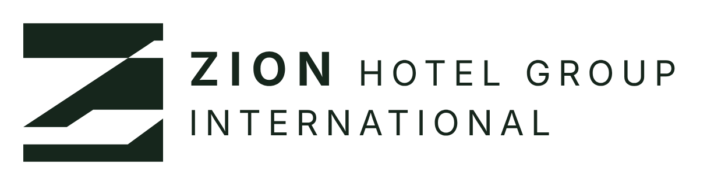
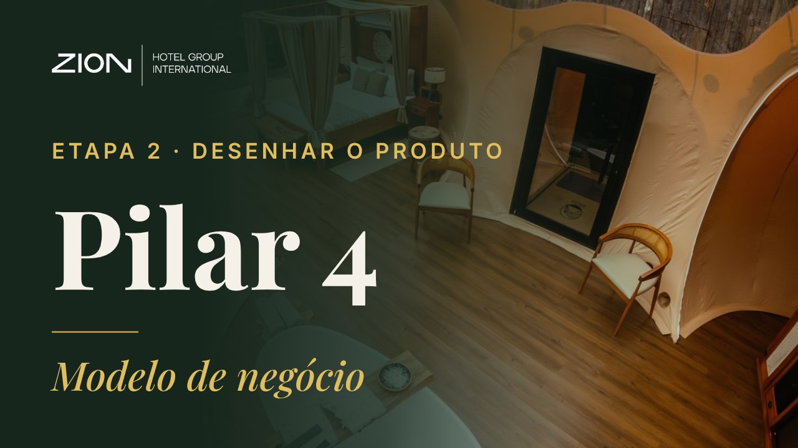
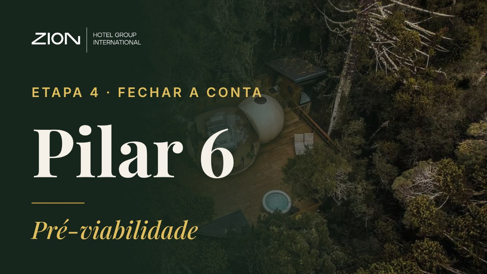

Transforme Seu Terreno em um Projeto de Hospedagem de Sucesso
Apresentações ao vivo
Uma apresentação por pilar, interativa: cada clique revela o próximo passo, os simuladores equalizam a conta na hora e os exercícios acontecem na tela. Abra no computador e use as setas ou o passador.
Comece aquiMarco Zero
Etapa 1 · Ler o lugarPilar 1 · Território e destino
Etapa 1 · Ler o lugarPilar 2 · Mercado e demanda
Etapa 2 · Desenhar o produtoPilar 3 · Produto e tipologias

Etapa 2 · Desenhar o produtoPilar 4 · Modelo de negócio
Etapa 3 · Desenhar o terrenoPilar 5 · Masterplan faseado

Etapa 4 · Fechar a contaPilar 6 · Pré-viabilidade
Etapa 4 · Fechar a contaPilar 7 · Capital e Dossiê
→avança (clique, espaço ou passador) · ←volta · Nnotas · Pmodo apresentador · Ftela cheia · Ovisão geral · Llaser · Dcaneta · Climpa · Btela preta · Rvolta o simulador ao exemplo